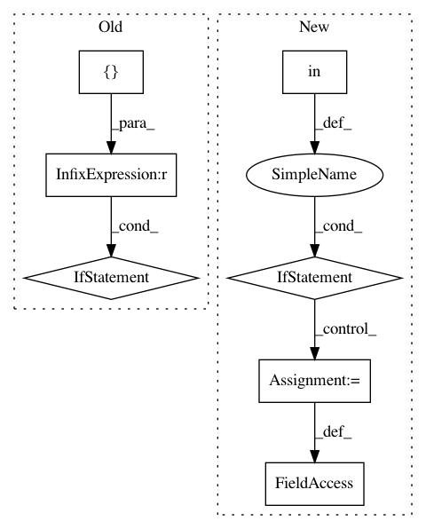

325fae8fbbc16b3c1ca40559bb2a9c783efaf440,libact/query_strategies/active_learning_by_learning.py,ActiveLearningByLearning,make_query,#ActiveLearningByLearning#,161
Before Change
def make_query(self):
Except for the initial query, it returns the id of the data albl
wants to query.
if self.queried_hist_ == []:
// initial query
q = self.exp4p_.next(-1, None, None)
ask_idx = np.random.choice(
np.arange(len(self.unlabeled_invert_id_idx)), size=1, p=q
)[0]
ask_id = self.unlabeled_entry_ids[ask_idx]
self.W.append(1./q[ask_idx])
self.queried_hist_.append(ask_id)
return self.queried_hist_[-1]
class Exp4P():
After Change
)[0]
ask_id = self.unlabeled_entry_ids[ask_idx]
if ask_id in unlabeled_entry_ids:
self.budget_used += 1
return ask_id
else:
self.update(ask_id, dataset.data[ask_id][1])
raise ValueError("Out of query budget")
class Exp4P():
In pattern: SUPERPATTERN
Frequency: 3
Non-data size: 7
Instances
Project Name: ntucllab/libact
Commit Name: 325fae8fbbc16b3c1ca40559bb2a9c783efaf440
Time: 2015-11-25
Author: yangarbiter@gmail.com
File Name: libact/query_strategies/active_learning_by_learning.py
Class Name: ActiveLearningByLearning
Method Name: make_query
Project Name: rasbt/mlxtend
Commit Name: af0d98898e2be517096c18335ab10b43b9fd461e
Time: 2015-03-17
Author: se.raschka@me.com
File Name: mlxtend/classifier/adaline.py
Class Name: Adaline
Method Name: fit
Project Name: rasbt/mlxtend
Commit Name: af0d98898e2be517096c18335ab10b43b9fd461e
Time: 2015-03-17
Author: se.raschka@me.com
File Name: mlxtend/classifier/perceptron.py
Class Name: Perceptron
Method Name: fit